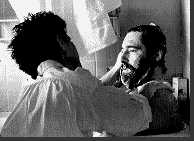

46th Berlin International
Film Festival (1996)
feature by Eddie Cockrell
Berlin Bears Down
 Sense and
Sensibility was awarded the grand prize Golden Berlin Bear today (February 26th),
as the 46th annual Berlin International Film Festival came to a close. Taiwan-born
director Ang Lee has now won two of the last four Golden Bears awarded by this Festival,
first coming to international attention when The Wedding Banquet took the grand prize in
1993. Emma Thompson stars in Sense and Sensibility and also adapted the Jane
Austen story for the screen.
Sense and
Sensibility was awarded the grand prize Golden Berlin Bear today (February 26th),
as the 46th annual Berlin International Film Festival came to a close. Taiwan-born
director Ang Lee has now won two of the last four Golden Bears awarded by this Festival,
first coming to international attention when The Wedding Banquet took the grand prize in
1993. Emma Thompson stars in Sense and Sensibility and also adapted the Jane
Austen story for the screen.
Bo Widerberg's Swedish/Danish co-production
Lust Och Fägring Stor (All Things Fair), added to the momentum of its
Best Foreign Film Oscar nomination by winning the Silver Berlin Bear Special Jury Prize.
The best director Bear was
shared by filmmaker Yim Ho for his drama Tai Yang You Er (The Sun Has Ears)
and British helmsman Richard Loncraine for Richard
III.
French actress Anouk Grinberg
was awarded the Silver
Berlin Bear for best actress for her fearless turn as a big hearted prostitute in Bertrand
Blier's Mon Homme, while Sean Penn got the best actor nod for Dead Man
Walking.
A Silver Berlin Bear for
outstanding special achievement went to E No Naka No Buka No Mura (Village of
Dreams) by Japanese director Yoichi Higashi for what competition jury president
Nikita Mikhalkov called "its superb originality in evoking childhood."
Widerberg also was awarded the
grand prize of the European Academy of Film and Television for All Things Fair,
while special mentions were passed out to Taiwanese director Edward Yang's Mahjong,
He Ping's Hong Kong/China collaboration Ri Guang Xia Gu (Sun Valley) and
Berlin based filmmaker Dani Levy's Stille Nacht (Silent Night).
Esteemed Polish director Andrzej
Wajda received a silver bear for lifetime achievement (his film Holy Week was
shown in competition).
The main prizes send a strong message to the world that the Berlin Festival, which has
fought fiercely to regain a certain Hollywood gloss in the past decade, won't heap awards
on American movies at the expense of international productions in competition. And, for
the first time in recent memory, the international press on hand for the awards
announcement seemed pleased with the jury's decision - when they don't like something,
they boo, and boo loudly.